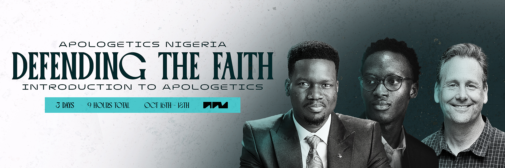

Free training · 16–18 October
Defending the Faith — three evenings, no cost.
An introduction to apologetics, live online, 7–10PM WAT. Learn to answer the questions your faith is actually being asked.
See the trainingStarts in
--Days
--Hrs
--Min
--Sec
- 16Fri
- 17Sat
- 18Sun
October · 7–10PM WAT · Online